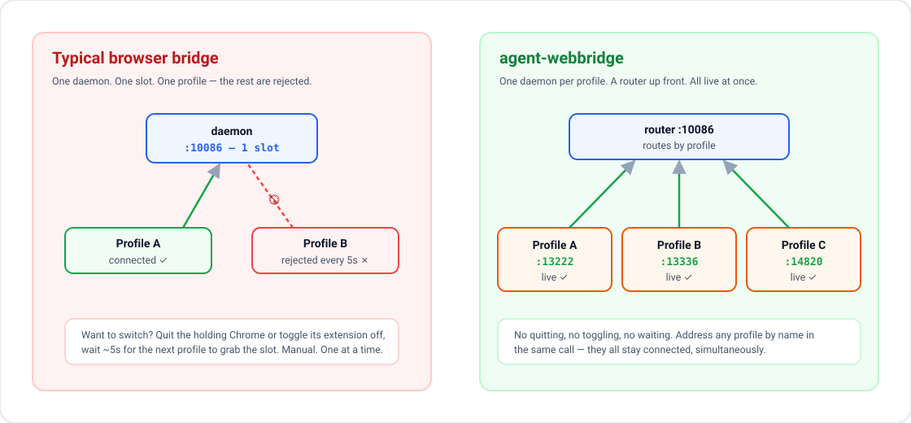

A request goes from your AI app to a local router, then to the daemon for the Chrome profile you named, then to the extension, which controls each tab separately.

10086. It accepts standard HTTP / MCP commands, extracts the "profile" parameter, and forwards the payload transparently to the corresponding daemon.
| Part | What it is |
|---|---|
| Chrome extension | A Manifest V3 extension. It attaches Chrome's debugger separately to each tab it controls. Permissions: debugger, tabs, tabGroups, storage, alarms, and access to all sites so it can act where you ask. It connects only to a daemon on 127.0.0.1. |
| Per-profile daemon | A small Node.js process, one per Chrome profile, on a port derived from the profile name. Its only runtime dependency is ws. |
| Router | Listens on 127.0.0.1:10086, reads the profile field of each request and forwards it to that profile's daemon. |
| Security guard | Since 1.3.1 the router and daemons refuse requests that carry a web page Origin or a non-loopback Host header. Versions before 1.3.1 did not, so update. |
| MCP server | npx -y agent-webbridge mcp exposes the browser tools to MCP apps over stdio. |